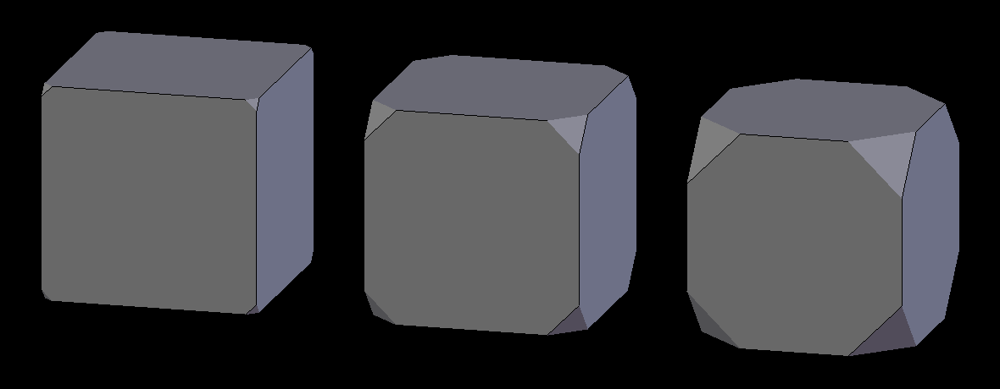

倒角修改器–knight翻译¶
倒角修改器可以把网格的棱切成斜角，允许控制如何以及哪里应用倒角操作到网格上。
倒角修改器与编辑模式下:doc:倒角操作 </modeling/meshes/editing/subdividing/bevel> 相比，具有非破坏性。

Not beveled. |

Beveled. |
The images above show the side views of a plain (Not beveled) cube and a beveled one.
选项¶
倒角修改器面板。
- 宽度
倒角影响的尺寸，见下面的 宽度方法。
- 段
沿着倒角的面所添加边环的数量
- 外形
- The shape of the bevel, from concave to convex. It has no effect if Segments is less than 2.
- 材料
- The index of the material slot to use for the bevel. When set to -1, the material of the nearest original face will be used.
- 仅顶点
When enabled, only the areas near vertices are beveled; the edges are left not beveled.
Three cubes with 0.1, 0.3 and 0.5 bevel Widths, with Only Vertices option enabled.
- 夹钳重叠
启用该选项时，每个倒角棱的宽度会限制到满足棱不会相交。相距甚远的棱仍然会全宽度倒角，仅影响靠的太近的棱。
- 限制方法
用来控制倒角应用到网面哪里。
- 无
无限制，所有的棱将会倒角。
- 角度
邻接面构成的二面角小于定义的阈值的棱将会倒角。用来允许你仅对物体构成尖端的棱倒角，而不影响光滑的表面。
- 权重
- Use each edge’s bevel weight to determine the width of the bevel. When the bevel weight is 0.0, no bevel is applied. See here about adjusting bevel weights.
- 顶点组
- Use weights from a vertex group to determine the width of the bevel. When the vertex weight is 0.0, no bevel is applied. An edge is only beveled if both of its vertices are in the vertex group. See here about adjusting vertex group weights.
{kind=link}
{kind=link}
- 宽度方法
用于控制如何度量 宽度 。
- 偏移量
数量是从原始棱到新棱的偏移量。
- 宽度
数量是新面的宽度。
- 深度
数量是从原始棱到倒角面的垂直距离。
- 百分比
数量是邻接棱长度的百分比。